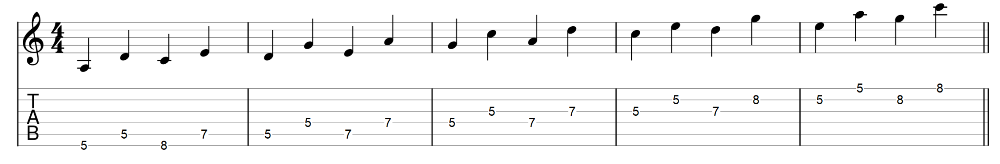
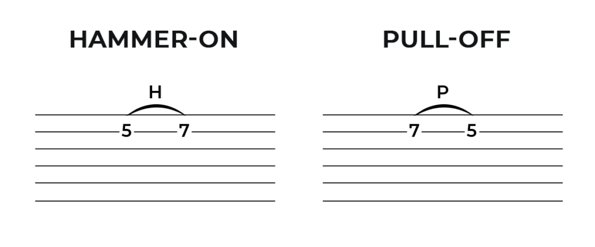
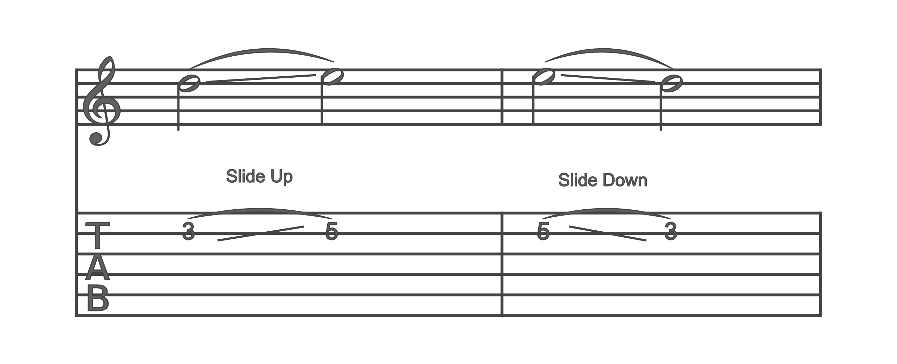

Họ và tên: Phan Ngọc Quý
Thông tin: Sinh viên năm 2 Khoa điện tử viễn thông - Đại học Bách Khoa Đà Nẵng
Chuyên ngành: Kĩ Thuật Máy Tính
Tên thường dùng: Zerolife
Project của bản thân:
+ Creat Game with Pascal
+ Creat Game with C++ & Sfml Libraby
+ How to play Fingerstyle with Guitar Tab
*Phần cuối của Portfolio là video giới thiệu về chính Portfolio này.
Project: Creat Game with Pascal
Chương trình được viết vào năm 2017 khi mà ngôn ngữ lập trình Pascal chính thức được loại khỏi danh sách ngôn ngữ được hỗ
trợ thi Competitive Programming và người người chuyển sang sử dụng C++ để thay thế. Chương trình được viết để thể
hiện Pascal vẫn còn rất tốt.
Đầu tiên thì chương trình được viết chạy trên màn hình console. Và sử dụng các kí tự chữ cái đơn giản mô phỏng lại
trò chơi rắn săn mồi huyền thoại trên điện thoại Nokia. Toàn bộ chương trình đều được code từ những thứ đơn giản
không yêu cầu thêm bất kì tài nguyên nào.
Tại sao nói chương trình này chứng minh Pascal vẫn còn rất tốt? Đó chính là sự hỗ trợ hiển thị trên màn hình console,
khác với C++ để hiển thị một thứ gì đó trên màn hình ở tọa độ chỉ định phải code khá là kì công và phức tạp, nhưng
với Pascal thì mọi thứ dễ dàng hơn chỉ với lệnh GotoXY(x,y). Hơn thế nữa Pascal còn hỗ trợ mảng có chỉ số âm,
điều mà C++ không có. Tóm lại Pascal vẫn xứng đáng là một ngôn ngữ tốt để mọi người nghiên cứu.
Project: Creat Game with C++ & Sfml Libraby
Dự án được làm vào năm 2022, bằng cách kết hợp thư viện đa phương tiện SFML và ngôn ngữ lập trình C++ để tạo nên một
ứng dụng game nhỏ.
Một số kiến thức được áp dụng trong game như là: Breadth First Search (BFS), Header Guard c++,
Object-oriented programming - OOP, Pointers, ...
Mặc dù nhìn có vẻ giản đơn, nhưng để hoàn thành phải cần đến 3 ngày. Tôi thậm chí phải dành ra gần như là 2 ngày
chỉ để Configure cho SFML hoạt động được với C++. Không có tài liệu hướng dẫn nào, tất cả có thể xem là may mắn
khi mà trước đó tôi cũng đã mất gần 1 tuần để Configure cho thư viện SDL(gần giống SFML) hoạt động trên C++.
Cuối cùng dự án còn là 1 câu chuyện thú vị, người chơi sẽ giúp 2 nhân vật tìm đường trong mê cung tối gặp được
nhau, trên đường đi có thể nhặt các vật phẩm thú vị. Dựa vào kết quả chơi câu chuyện cũng sẽ diễn biến khác mang
lại sự hứng thú cho người chơi.
Project: How to play Fingerstyle with Guitar tab

phần trên là sheet nhạc dành cho tất cả các loại nhạc cụ, và phần dưới là tab dành cho Guitar.
Tab có 6 dòng từ trên xuống dưới lần lượt là dây 1 đến 6 của đàn.
Khi đọc Tab số ở dòng nào thì ta sẽ bấm vào dây đó ở khoang số đó và gảy.
Ngoài ra còn áp dụng một số kĩ thuật để làm cho tiếng đàn hay hơn.
Dưới đây là kí hiệu các kĩ thuật thông thườngtrên tab:
Kĩ thuật Pull off và Hammer on: Kết hợp gảy bằng tay phải và buông hay nhấn nhanh bằng tay phải tạo luyến.

Kĩ thuật Slide: Kết hợp gảy bằng tay phải và dùng tay trái lướt dọc dây tạo âm thanh réo rắt liền mạch.

Ngoài ra còn có Palm, Nail Attack, Bend ... Tuy nhiên chỉ cần 3 kĩ thuật cơ bản trên là bạn có thể
chơi được bài mình thích.
Project: How to read Guitar tab
Ở bên là một bài sử dụng kĩ thuật fingerstyle và đọc tab. Chỉ cần bỏ một chút thời gian là bạn đã có thể
chơi được bài nhạc mình thích. Âm nhạc luôn là thứ thư giãn hữu hiệu.